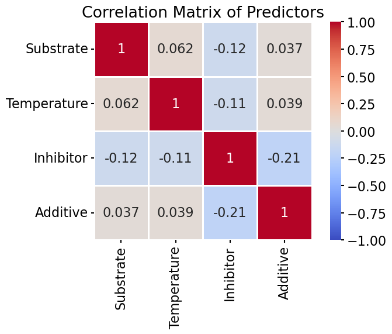
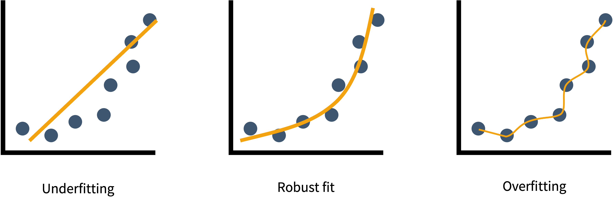

20. Multiple Linear Regression and Model Comparison
This session extends regression to multiple predictors (MLR) and covers model comparison (F-test, AIC, BIC), implemented with scipy and statsmodels.
Code imports
Multiple Linear Regression (MLR)
In simple linear regression (SLR), we were modeling (fitting) data with one continuous outcome as a function of one continuous input variable.
In Multiple linear regression (MLR), we model data with one continuous outcome as a function of multiple continuous input variables. A generalized equation that describes this is shown below.
\[y = \beta_0 + \beta_1 x_1 + \beta_2 x_2 + \cdots + \beta_p x_p + \varepsilon\]
Example: modeling reaction yield as a function of both pH and temperature simultaneously. If both inputs are continuous and the number of unique values per input is sufficient, MLR is appropriate. If each input takes only a few discrete values (3 pH values and 3 temperatures), two-way ANOVA would be used instead. Why is this the case? If you have only a few discrete values, you cannot reliably fit a function.
Assumptions (same first four as for SLR, but add one more):
- Linearity
- Normality of residuals
- Homoscedasticity
- Independence of errors
- No perfect multicollinearity: the input variables must not be perfectly correlated with each other
Example dataset: we have collected a dataset for activity of a catalyst at different starting material concentrations, temperatures, inhibitor concentrations, and additive concentrations.
Terminology note: MLR (multiple input variables, one outcome) is very often confused with multivariate regression (multiple outcome variables). The two are NOT the same. We will discuss multivariate analysis later in the semester.
Multicollinearity
Multicollinearity occurs when two or more input variables are highly correlated. This makes it difficult or impossible to separate their individual effects on the outcome.

Rule of thumb: correlations between predictors (or inputs) greater than ±0.8 are a common warning threshold. Check pairwise correlations before fitting an MLR model. If multicollinearity is present, consider removing one of the correlated predictors.
When predictors are highly correlated, the model coefficients become unstable: Small changes in the data produce large swings in the estimated \(\beta\) values. The standard errors of the coefficients inflate, making p-values unreliable. The overall model fit (\(R^2\)) may still be high, creating a misleading impression that the model is reliable when individual predictors cannot be trusted.
Example dataset continued: Before fitting our data, we should test if any of the predictors is collinear (rule of thumb: |r| > 0.8 is problematic):
Interpreting MLR Coefficients
Each coefficient \(\beta_i\) represents the expected change in y for a one-unit increase in \(x_i\), holding all other predictors constant.
- Sign: positive = positive association; negative = negative association
- Magnitude: the size of the effect, but only comparable between predictors if the variables are on the same scale (such as after z-score standardization that we discussed in a prior lecture!)
- Intercept (\(\beta_0\)): the expected value of y when all predictors are zero.
Example dataset continued: To derive the coefficients, we should model the data with MLR. BUT, first we need to standardize the predictor scales so that we can compare the scales of the coefficients, then we can fit a model.
Analyzing the model
Most of the model analysis for MLR is similar to SLR.
Goodness of fit metrics
In the SLR lecture, we learned about adjusted \(R^2\), RMSE, and MAE. Here we also can use these metrics to evaluate the model.
Evaluate with R², adjusted R², and RMSE:
Residual Analysis for MLR
The same residual checks as for SLR apply:
- Linearity: scatter plot of predicted vs. actual values should be close to the diagonal; residuals vs. each predictor should show no systematic pattern.
- Homoscedasticity: residuals should have constant spread across predicted values.
- Normality: Q-Q plot of residuals should be approximately linear.
Diagnostics: actual vs. predicted, and residuals:
Finding the best fit
The goal of regression in chemistry, biochemistry, and related fields is to find a model that best describes the data mathematically, physically, and scientifically. We can err on either side of this goal and get models that do not represent our data well.
Overfitting and Underfitting
Underfitting: the model is too simple to capture the pattern in the data. The fit looks poor even on the data used to create the model/fit.
Overfitting: the model is too complex. The model visually looks like it describes the data well, but it is capturing noise rather than true signal. It will generalize poorly to new data.

In linear regression, the adjusted \(R^2\) partially addresses overfitting by penalizing for additional predictors. More formally, we can use statistical tests or comparisons to decide between models, including the F-test, AIC, and BIC (see below).
The best defense against overfitting is scientific reasoning: add predictors only when you have a theoretical or domain reason to expect they impact the outcome.
Model Comparison
When multiple models could describe the same data, formal comparison is needed. Three complementary methods:
F-Test (for nested models ONLY)
The F-test compares two models where one is a simpler version of the other (a “nested” model, such as a simple linear regression and a multiple linear regression with two inputs). \(H_0\): the simpler model fits the data as well as the more complex model.
\[F = \frac{(\text{RSS}_{\text{simple}} - \text{RSS}_{\text{complex}}) / (p_2 - p_1)}{\text{RSS}_{\text{complex}} / (n - p_2 - 1)}\]
If p < 0.05, the additional parameters in the complex model significantly improve the fit.
Limitation: only valid for nested models.
AIC (Akaike Information Criterion)
\[\text{AIC} = 2k - 2\ln(\hat{L})\]
where k is the number of parameters and \(\hat{L}\) is the maximum likelihood. AIC penalises for complexity but less aggressively than BIC (see below). The AIC is calculated for both models, and the model with the lowest AIC has the most support. The ∆AIC can provide a degree of belief for the selected model.
BIC (Bayesian Information Criterion)
\[\text{BIC} = k\ln(n) - 2\ln(\hat{L})\]
again where k is the number of parameters and \(\hat{L}\) is the maximum likelihood. The BIC penalises for complexity more aggressively than the AIC (penalizes overfitting more), but otherwise the interpretations are the same.
F-test vs. AIC vs. BIC
| Method | Works on non-nested models? | Conservatism |
|---|---|---|
| F-test | No | Moderate |
| AIC | Yes | Less conservative |
| BIC | Yes | More conservative |
Comparing nested models (full vs. one with Substrate dropped) with statsmodels — F-test and AIC:
For nested models, the F-test provides a significance-based answer, testing a hypothesis. For non-nested model comparison, AIC and BIC provide relative rankings; they are meaningless in isolation but informative when compared between models applied to the same data. When AIC and BIC disagree (one favors the complex model, the other the simple model), consider domain knowledge and residual analysis to make a final decision.
MLR and Machine Learning
MLR is a predictive modeling technique with a similar goal as most machine learning methods. MLR is frequently used as a baseline model in ML projects: if a complex neural network cannot outperform MLR on a given dataset, it is not worth the added complexity (similar to evaluating over- and underfitting).
The terminology between the fields differ and some of the perspectives and goals differ.
Terminology:
- in MLR, we say “inputs”, “predictors,” “coefficients,” and “intercept”
- in ML, the same concepts are called “features,” “weights,” and “biases”
In terms of the perspectives and goals, MLR methods are focused on finding a mathematical way to describe the data. Thus, a black-box answer is not sufficient. In contrast, to date, many ML methods are focused on the predictive power with less focus on interpretability. However, this is changing in terms of ML at an exciting rate.
We will discuss more introductory level ML later in the semester.
Prediction: Interpolation vs. Extrapolation
Once a model is fitted, it can be used to predict y for new values of x. Two important caveats:
Interpolation is when we predict information for a data point that falls within the range of the data used to build our model. Interpolation is generally reasonable, with uncertainty that increases toward the edges of the range.
Extrapolation is when we predict information for a data point that falls outside the range of the data used to build our model. Extrapolation carries inherent risks and can be highly unreliable. We have no information about if the data continues to show this behavior outside of the range that we have studied. Maybe another phenomenon takes over, such as saturation or decay. It is important to note when predictions are made from extrapolation beyond the data used to build the model.
- MLR predicts a continuous outcome from several continuous predictors; watch for multicollinearity (|r| > 0.8).
- Each coefficient is the effect of one predictor holding the others constant; standardize scales to compare them.
- Interpolation is reliable; extrapolate is fragile
- Guard against overfitting (adjusted \(R^2\), AIC, BIC).
- Model comparison: F-test (nested only), AIC (less conservative), BIC (more conservative).
- In Python:
sklearn.LinearRegressionto fit,statsmodels.OLSfor the F-test / AIC comparison.
In person
TBD